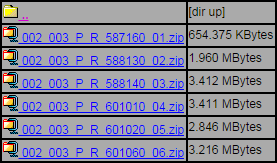
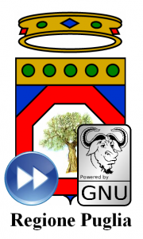
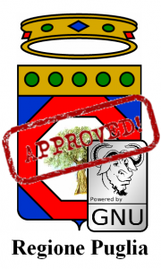

Così ho fatto la cosa teoricamente più ovvia del mondo: una ricerca su Google. In non più di 10 minuti ho rinvenuto, sul sito dell’Agenzia Regionale per la Tutela dell’Ambiente (ARTA), le informazioni che volevo. Tutto era riportato negli allegati della D.G.R. 148 del 10/03/2016 e in un’applicazione web della stessa ARTA, da cui era possibile scaricare i risultati delle analisi in formato Excel e PDF.
Entusiasta di questa scoperta ho subito pensato di realizzare un’applicazione di web mapping, di quelle che “mi piacciono TANTO”, per facilitare la lettura dei dati messi a disposizione dall’ARTA. Il mio entusiasmo, però, si è smorzato non poco quando ho notato che l’unico file in cui erano riportate le coordinate dei limiti dei tratti di costa analizzati e dei punti di prelievo era il PDF della D.G.R.
Storcendo un po’ il naso, l’ho scaricato, ho estratto le pagine con i dati e, dopo un paio di tentativi poco fortunati di tirarne fuori in maniera (semi)automatica qualcosa di utilizzabile con dei programmi OCR online, mi sono rassegnato a ricopiare a mano le righe che riguardavano la mia provincia (Pescara) in un file di testo che ho poi salvato in CSV. Usando questo file parziale ho creato una mappa tematica semplicissima con Google My Maps e l’ho condivisa, molto poco soddisfatto del risultato, su Facebook, dicendomi: “Meglio di niente!”. Nonostante non fossi soddisfatto a livello tecnico, l’obiettivo si poteva dire raggiunto: i risultati delle analisi dicono che l’acqua è sostanzialmente pulita, addirittura di qualità eccellente lungo gran parte della costa. Alla faccia del disfattismo e del qualunquismo da tastiera.
Grazie ai dati del Portale Acque, distribuiti sotto licenza CC per mezzo di una serie di servizi ReST (per quanto non sia ancora riuscito a capire fino in fondo come sono strutturati) la musica è cambiata radicalmente e, realizzando uno script in PHP per il recupero dei dati in cross origin e un client Javascript basato sull’ottimo Bootleaf, ho sviluppato una sorta di clone dell’applicazione di web mapping ufficiale, con la differenza che la mia considera i soli dati sulla costa abruzzese e che la tematizzazione della mappa non si limita a classificare le zone indagate secondo una scala di due colori (verde/rosso = aperto/chiuso) ma riprende una scala più fine che, sul Portale Acque, è espressa da un simbolo colorato visibile solo accedendo con un clic al pannello di dettaglio di ogni zona. La potete vedere all’opera cliccando qui, mentre qui trovate il repository con il codice su GitHub.
In chiusura, mi preme sottolineare quanto sia importante rendere accessibili e divulgare nel modo più chiaro possibile dati di interesse pubblico come questi, evitando di dare respiro alle chiacchiere, al disfattismo e ai facili allarmismi, che al giorno d’oggi corrono veloci sulla rete, attecchiscono più facilmente e sono più duri da sradicare dell’erba cattiva!
Preso dalle tante sollecitazioni arrivate dall’emergenza maltempo a Genova, Parma e Alessandria, ho pensato di iniziare a raccogliere dati e informazioni legate al Rischio¬†idrogeologico in terra di Sicilia.
Ho constatato una barriera di accesso alle informazioni sui siti ufficiali della Pubblica Amministrazione, e anche le notizie reperibili attraverso articoli giornalistici, non riescono a dare una risposta chiara ad una domanda semplice: sono in pericolo?
Fornire gli strumenti per dare una risposta, significa fare una buona informazione civica, un obiettivo alto e stimolante per chi gestisce la cosa pubblica, ma che alle volte non è nemmeno abbozzato.
Per valutare il mio rischio devo rispondere almeno ad altre due domande:
vivo vicino ad un rischio naturale?
se sì, quanto è elevato?
I contenuti utili a definire la cosa sono disponibili, ma non permettono di passare dalla propria e personale conoscenza del territorio alla sua rappresentazione istituzionale.
Ho concentrato la mia ricerca sul rischio idrogeologico e sono “caduto” in questo articolo¬†del Giornale di Sicilia: nella mia regione ci sarebbero 22 mila aree a rischio.
Il progetto di riferimento √® il PAI¬†(Piano di Assetto Idrogeologico), “lo strumento conoscitivo, normativo e tecnico-operativo mediante il quale sono pianificate e programmate le azioni, gli interventi e le norme d‚Äôuso riguardanti la ¬†difesa dal rischio idrogeologico¬†del territorio siciliano“.
Il sito web ufficiale è http://www.sitr.regione.sicilia.it/pai/, tenuto aggiornato nel tempo e ricco di pagine contenenti numerosi allegati (essenzialmente file PDF, compressi in file .zip). Mi aiuta a rispondere alle questioni poste sopra?
Non credo, salvo non conoscere ad esempio i nomi dei bacini idrografici locali, cosa ignota al 99 % delle persone che frequento. Ma anche sapendo il nome del bacino – ad esempio “Torrente Saponara, Area Territoriale tra i bacini T.te Saponara e F.ra Niceto” – ci si trova davanti a barriere di comunicazione¬†come quella dell’immagine di sotto.

Qual √® il significato del nome di questi file? Ne apro qualcuno, guardo un po’ dentro e cerco di capire? Non credo possa essere cos√¨, e sicuramente non pu√≤ essere solo cos√¨.
Dati come questi devono essere pubblicati anche in maniera immediatamente comprensibile e leggibile da tutti: me, mia mamma, un giornalista, un pittore, un tecnico comunale, mio nipote il grande, il vicino di casa e financo da Gerlando.
Solo come esempio, per quell’insieme di persone che ha accesso al web, una semplice¬†mappa¬†come questa¬†d√† un’informazione che √® subito comprensibile ad una platea vasta: dovo sono le aree a rischio frana in Sicilia, e qual √® il grado di rischio.
Non scrivo tutto questo per fare una critica al PAI, è un progetto che non conosco e che immagino essere di qualità.
La barriera non è la presenza/assenza delle informazioni ma il loro scarso grado di utilizzabilità civica. Sarebbe auspicabile una collaborazione con la cittadinanza per trovare le modalità per superarla. Il risultato può essere proprio una mappa facilmente comprensibile da tutti.
Si tratta di un problema molto pi√π semplice di quello del rischio idrogeologico, cionondimeno affrontarlo e risolverlo sarebbe una scelta politica con benefici a catena per tutti.
Invito la Regione Siciliana a costruire sul tema del rischio idrogeologico (e sul rischio in generale) una strategia di comunicazione e di informazione civica di qualità, senza barriere e ad ampio spettro.
Ad aprire di pi√π e meglio i dati relativi, in modo che possano essere realizzate analisi e rappresentazioni del tema che oggi nemmeno immaginiamo. La carta interattiva di sopra, √® stata implementata grazie a 2 servizi aperti: quello messo a disposizione dal Geoportale Regione Siciliana¬†(special thanks ad¬†Agostino) e l’ortofoto RealVista.
Una delle conseguenze dell’apertura dei dati √® proprio quella di creare le precondizioni per raccontare meglio il proprio il territorio, in ci√≤ per cui brilla e in ci√≤ per cui √® a rischio.
E io di queste storie vorrei poterne leggere tante.
NdR: questo articolo è pubblicato anche sul blog di Open Data Sicilia.
Ricorderete abbiamo gi√† parlato della L.R. 20/2012 ‚ÄúNorme sul software libero, accessibilit√† di dati e documenti e hardware documentato‚Äù. Con Delibera di Giunta Regionale n. 2183 del 31 ottobre scorso la Regione Puglia compie un ulteriore passo avanti, definendo i primi concreti indirizzi verso l‚Äôadozione istituzionale degli open data.¬†Il provvedimento parla espressamente di open government e riprende altri due importanti documenti istituzionali, ovvero la ‚ÄúStrategia regionale per la Societ√† dell‚ÄôInformazione 2007-2013‚Äù (approvato con DGR n. 508/2010), e la “Strategia regionale della smart specialization” (approvato con¬†DGR n. 1468/2012).
E’ interessante mettere in evidenza alcuni punti salienti della DGR, nello specifico:
[...] possono già essere avviate le azioni necessarie ad attuare quanto previsto dall’art.6 [della L.R. 20/2010] in materia di “riutilizzo dei documenti e dei dati pubblici”, in quanto sussistono:
- il notevole patrimonio informativo prodotto nel tempo dalla Regione Puglia, dalle sue Agenzie e Società in house oltre che da tutti gli altri soggetti pubblici e privati cui la legge regionale si riferisce;
- la consistenza della quantità di informazioni e documenti già pubblicati on line e disponibili nei diversi portali istituzionali, riferiti sia ad attività ordinarie e ad obblighi di legge che alle scelte operate in materia di Trasparenza;
- l’opportunità data, quindi, di procedere alla creazione della piattaforma dei dati aperti (Open Data) della Regione Puglia e alla promozione delle basi di dati prodotte, come leva strategica su cui puntare per creare nuove opportunità di crescita e trasparenza.
[...]
è invece necessario avviare un processo istruttorio complesso e partecipato per dotarsi del previsto Piano triennale di informatizzazione, che definisca la strategia dell’Ente in ambito informatico e del programma triennale per la promozione di progetti di ricerca, sviluppo e produzione relativi al software libero e all’Hardware documentato.
[...]
Considerato, inoltre
- che è necessario attivare azioni che producano valore aggiunto alla generazione e disponibilità di open data, per sostenerne e diffonderne un utilizzo attivo;
- che bisogna creare i presupposti per la realizzazione di un modello di open government basato sul libero accesso ai dati pubblici e di un acceleratore economico per il territorio,
in particolare:
- integrare la visualizzazione degli open data nel ciclo delle politiche pubbliche (nelle fasi di disegno, implementazione e valutazione) al fine di migliorarne la qualità stimolando l’intelligenza collettiva anche attraverso le proposte commentabili, la modellazione d’impatto, la raccolta di feedback e la valutazione partecipata;
- incentivare le aziende a riutilizzare, anche a scopi commerciali, le informazioni pubbliche e a creare applicazioni innovative basate su questi dati;
- che, quindi, è opportuno avviare prime sperimentazioni, valutarne i risultati e valorizzarne le buone prassi individuate.
Alla Direzione dell’Area Politiche per lo Sviluppo economico, il Lavoro e l’Innovazione viene affidato il coordinamento generale per l’attuazione della L.R.20/2012 e la creazione del futuro portale regionale degli open datawww.dati.puglia.it nel quale confluiranno tutti i dati aperti delle strutture regionali (e non solo, si spera). Altra nota di rilievo è l’esplicita adozione della licenza IODL 2.0 sponsorizzata da www.dati.gov.it sebbene non sia ancora stata adottata ufficialmente dalla normativa dello Stato. Si tratta sostanzialmente di una CC-BY.
Infine la Regione Puglia si impegna ad avviare “prime sperimentazioni che puntino a qualificare l’utilizzo dei dati aperti come strumento di open government, attraverso percorsi partecipati” anche dedicati alle imprese innovative e alle startup giovanili che puntino al riuso dei dati aperti e alla replicabilità delle buone prassi.
Finalmente il DdL ‚ÄúNorme sul software libero, accessibilit√† di dati e documenti ed hardware¬†documentato‚Äù √® stato approvato per essere convertito in legge nella seduta del Consiglio della Regione Puglia di ieri. A questo link √® possibile accedere all’iter di approvazione e i relativi documenti, tra i quali il testo dell’articolato privo degli emendamenti approvati in Consiglio Regionale.
E’ un provvedimento che seguiamo da tempo, del quale esattamente un anno fa avevamo gi√† fatto una analisi tesa a metterne in evidenza i punti di forza, e qualche debolezza,¬†e per il quale ci eravamo auspicati miglioramenti soprattutto per il riuso aperto e libero dei dati pubblici. Del resto in un altro precedente articolo a commento di uno degli altri due DdL su software e dati aperti, avevamo addirittura proposto degli emendamenti, che definivano con maggiore precisione proprio il concetto di open data e relativo riuso, auspicando l’adozione di linked open data, dato che parlavamo di¬†rintracciabilit√† dei dati da parte dei motori di ricerca su internet e lo scaricamento dai siti web istituzionali delle Pubbliche Amministrazioni.
L’impianto del DdL nella versione della quale avevamo parlato un anno fa √® stato arricchito e potenziato dal nuovo¬†articolo 17, che istituisce una “Comunit√† di pratica”,¬†aperta alle Universit√† e al partenariato economico e¬†sociale, e che si pone obiettivi estremamente ambiziosi:
promuovere lo scambio, la diffusione e il riuso di esperienze, progetti e soluzioni relativi al software libero nella PA e nelle imprese;
creare ed aggiornare una mappa delle richieste, delle competenze e delle esperienze disponibili sul territorio codificandole in specie digitali (?);
promuovere attività di informazione dirette alle amministrazioni locali ed alle piccole e medie imprese del territorio regionale, sostenendo modalità di collaborazione tra Università, associazioni ed imprese;
creare una rete di soggetti, informatici ed utenti impiegati nella PA, utilizzatori privati, sviluppatori, PMI, studenti, collegata agli obiettivi ed alle strategie del Centro di competenza sull’open source (NdR – nel DdL per la verit√† tale Centro non viene istituito, forse derivato dal testo della L.R. 11/2006 della Regione Umbria¬†che in effetti ha istituito un CCOS);
contribuire alla individuazione di un adeguato percorso formativo ed universitario, per la preparazione professionale di esperti in software libero, e diretto alle scuole primarie e secondarie per la diffusione di una cultura del software libero;
promuovere lo studio di fattibilità di sistemi Cloud Computing per la Pubblica Amministrazione tali da poter permettere la distribuzione di risorse di calcolo, archiviazione, software e umane per diversi utilizzatori e scopi.
Gli emendamenti approvati in Consiglio
Durante i lavori della seduta consiliare sono stati inoltre approvati cinque emendamenti, che di fatto vanno a rafforzare l’impianto del testo. Tra i pi√π significativi, il primo fa esplicito riferimento all’open government, come forma di partecipazione attiva dei cittadini al processo decisionale attraverso l’adozione e diffusione degli open data. Il terzo emendamento entra nel merito del Piano d’informatizzazione, con alcuni ulteriori commi inseriti nell’articolo 9 (prima presenti nell’articolo 10, soppressi da un altro emendamento) che opportunamente¬†definiscono in dettaglio i criteri che devono caratterizzare la valutazione tecnica-economica riguardante l’adozione da parte della PA regionale di soluzioni basate su software libero e il loro riuso.
In conclusione, non possiamo che congratularci con la Regione Puglia per l’adozione di questa Legge, che la pone davvero all’avanguardia nella valorizzazione e promozione sia del software libero che degli open data. Il prossimo importante passo sar√† la rapida adozione Piano d’informatizzazione, il vero strumento di attuazione della nuova Legge Regionale.
Infine, speriamo ora che il SIT Puglia adegui al pi√π presto le licenze di uso dei dati geografici, rendendoli realmente riusabili in maniera aperta e libera a tutti.
Approfondimenti sul riuso dei dati pubblici
Comunicazione CE “Dati aperti -¬†Un motore per l‚Äôinnovazione, la crescita e una governance trasparente” (link)
EPSIplatform, la piattaforma europea sull’informazione nel settore pubblico (link)
La riunione telefonica avvenne puntualmente un mese più tardi. Alfonso Quaglione –l’autore della mail- espose ai blogger invitati, tra cui noi di TANTO, le proposte della Rivista, per quale finalità erano nate, ecc. ecc. Si raccolsero le prime impressioni, i commenti e i contributi. Alcuni espressero perplessità; emerse anche qualche critica. Luglio e agosto passarono, ancora tra qualche scambio di email, per puntualizzare punti di vista e per precisare meglio i dubbi.
Tralascio di soffermarmi sui distinguo. Quanto esporrò nel seguito prese infatti le mosse dalla constatazione che -in generale- tutti gli interventi fossero legati da un fil rouge, esprimibile in forma di auspicio: “Possiamo e dobbiamo continuare a parlarne”. Tra le idee e i possibili obiettivi espressi nella prima riunione virtuale di giugno, certamente questi trovavano ampia condivisione:
portare i temi pi√π importanti dell’informazione geografica anche all‚Äôattenzione dei non addetti ai lavori
creare un network dell’informazione geografica.
Valeva quindi la pena provare a fertilizzare questo dialogo, innescato dall’apprezzata rivista di geomatica, cercando occasioni per collaborare in quella direzione condivisa, ripromettendosi di operare per attrarre l’attenzione e l’interesse di chi –singole persone e aggregazioni- ne avesse approvato le finalità.
E’ a questo punto che entra in scena “Stati Generali dell’Innovazione” –SGI. I promotori di questa iniziativa –di cui su TANTO abbiamo scritto ormai in diverse occasioni (leggi qui e qui)- erano impegnati negli stessi mesi nell’organizzazione di un evento che richiamasse la partecipazione di tutti i portatori d’interesse verso la costruzione di una prospettiva condivisa per un cambio effettivo nella politica dell’innovazione per l’Italia.
In sintesi, le cose sono andate così.
SGI è un’associazione –ha anche uno statuto- ma si presenta meglio come una rete di associazioni, organizzazioni, enti, gruppi e persone singole, unite da uno scopo ben preciso: “Fornire contributi alla classe dirigente per attuare scelte rivolte alla realizzazione di un sistema di innovazione diffusa, un’innovazione che nasca dalle comunità e che al benessere delle comunità, in quanto reti relazionali, economiche e sociali, sia principalmente rivolta.”
Prendere parte alle attività di SGI è semplice e ci si può coinvolgere in modi diversi, con impegno differente: puoi visitare la pagina o iscriverti al gruppo FB; puoi seguire l’iniziativa su Twitter (@SGInnovazione); si può prendere parte alle discussioni avviate sui forum aperti sul sito dell’associazione, puoi restare connesso utilizzando gli RSS, iscriverti alla mailing-list; puoi aderire all’iniziativa, associarti -come organizzazione o singolo-, insomma i canali per ricevere informazioni e comunicare le proprie idee non mancano.
E’ sembrato –non a tutti, ma a più d’uno- il contesto appropriato per provare a individuare e proporre argomenti e idee riguardanti l’Informazione Geografica che –per il loro valore o per le interconnessioni con altri temi- destino attenzione all’interno di tale costituenda comunità e, per questa strada, vedere anche se potesse formarsi almeno un ordito di ciò che potrebbe poi diventare una rete geomatica “costituita dal basso”.
Così, “zitti zitti, piano piano”, senza fare confusione… un gruppetto di geomatici si è affacciato a SGI. Il primo –atteso- incontro pubblico ha avuto luogo il 25 e il 26 novembre scorsi. Come ho raccontato qua, l’esperienza è stata più che positiva: una conferma sia del clima partecipativo e collaborativo che traspariva già in Rete, sia di come i temi dell’Informazione Geografica possano essere accolti, recepiti e apprezzati in un contesto ICT generale e inquadrato sui contributi che tutti possiamo dare per raggiungere gli scopi per cui SGI è stata costituita.
La rete si sta formando
Il convegno di fine novembre è stato solo l’inizio, un buon inizio –scrivono gli organizzatori- per gli Stati Generali dell’Innovazione. L’esito, infatti, in termini di adesioni, partecipazione, temi affrontati e conclusioni a cui si è pervenuti, pongono già questa “meta-associazione” quale realtà con cui chi governa potrà confrontarsi e una risorsa per tutti coloro che vogliono produrre un vero cambiamento nelle politiche  dell’innovazione del nostro Paese.
Il “gruppetto” nato grazie alle discussioni estive di cui vi ho raccontato, ha continuato a dialogare in Rete, si è un poco rafforzato e ha iniziato a interagire all’interno degli Stati.
SGI sta alacremente costruendo una roadmap per il 2012, la roadmap dell’Italia che innova. E’ stata già formalizzata la Consulta Permanente degli SGI, sono avviate attività sui temi principali e più urgenti individuati; si sta definendo un calendario di eventi per portare il confronto degli SGI su tutto il territorio nazionale e altro ancora.
Consultando le otto schede, per altrettante azioni, messe a punto nel corso dell’incontro di novembre, possono affiorare molti argomenti legati o affini alle tematiche dell’Informazione Geografica. Stati Generali dell’Innovazione offre quindi la possibilità di entrare in contatto con soggetti che assumono intrinsecamente l’IG quale componente delle risorse che possono contribuire all’innovazione del Paese. Un’opportunità nuova per cooperare nella promozione delle istanze del nostro settore,  condividendo esigenze comuni. Per esempio, alcuni aspetti legati allo sviluppo delle Infrastrutture di Dati Territoriali a livello sub-nazionale si possono pienamente approfondire anche nell’ambito di un programma per promuovere il federalismo digitale, com’è stato articolato nella scheda “Inclusione digitale – Azione 1”. Così pure, non riesco a pensare a un programma che persegua il modello delle smart cities (scheda “Creatività e conoscenza condivisa РAzione 2”), senza “smart geo-data e smart geo-services”. Oppure ancora: quali contributi possono dare i geomatici rispetto al mutamento di modello di governance del settore pubblico, all’Open Government?
Vi sono processi in corso per cui potrebbe essere deleterio e controproducente lavorare a compartimenti. Credo sia allora un’opportunità quanto proposto dal programma per rendere pubblici e in formato aperto i dati della Pubblica Amministrazione (scheda “Open Government РAzione 1”). Sarebbe assai curioso non trovare visi noti al Tavolo di lavoro sugli Open Data che verrà costituito nei prossimi mesi.
Un’ultima annotazione: come sempre, in questi primi giorni del 2012 le associazioni del nostro settore, così come enti e varie organizzazioni, sono certamente già impegnate nella preparazione di convegni, workshop, seminari con finalità tecnico-scientifiche, per promuovere progetti, con scopi divulgativi. Per alcuni temi e in alcune circostanze, verificare sinergie con SGI, verificare se vi possono essere motivi di arricchimento per la road map “dell’Italia che innova”, potrebbe generare valore per l’iniziativa in corso di programmazione. Ugualmente, la geo-rete ipotizzata può essere portatrice di contributi geomatici nell’ambito di eventi organizzati da SGI e suoi associati.
Fin qui l’attività di “apri-pista” che abbiamo svolto. L’idea iniziale degli amici di GEOmedia ha innescato un dibattito certamente utile. Se la partecipazione a Stati Generali dell’Innovazione che vi ho presentato sarà apprezzata e vedrà l’aggregazione e il coinvolgimento di altri attori della geomatica -associazioni, professionisti,  blogger, imprenditori, …- essa sarà un segno di novità (di innovazione?) nell’ambito del nostro settore. SGI consente di presentare propri contributi, secondo gli interessi, la sensibilità, le esigenze di cui ognuno è portatore, per elaborare in modo condiviso e attraverso un processo inclusivo un programma per “l’innovazione nel governo dell’Italia”, come risultato complessivo degli Stati Generali dell’Innovazione.
Lezioni online per spiegare scienza e tecnologia Oilproject organizza con l’Istituto Italiano di Tecnologia una serie di lezioni divulgative su neuroscienze, nanotecnologie, farmacologia e macchine intelligenti, per raccontare al grande pubblico lo stato dell’arte della ricerca di base e applicata. Qui tutti i dettagli. Leggi tutto... (0)
Il GFOSS Day 2011 √® a Foggia I prossimi 24 e 25 novembre l’Universit√† degli Studi di Foggia ospiter√† il GFOSS DAY 2011, organizzato come di consueto dall’Associazione Italiana per l’Informazione Geografica Libera GFOSS.it Leggi tutto... (1)
TANTO non rappresenta una testata giornalistica ai sensi della legge n. 62 del 7.03.2001, in quanto non viene aggiornato con una precisa e determinata periodicita'. Pertanto, in alcun modo puo' considerarsi un prodotto editoriale.


{kind=link}
{kind=link}
{kind=link}